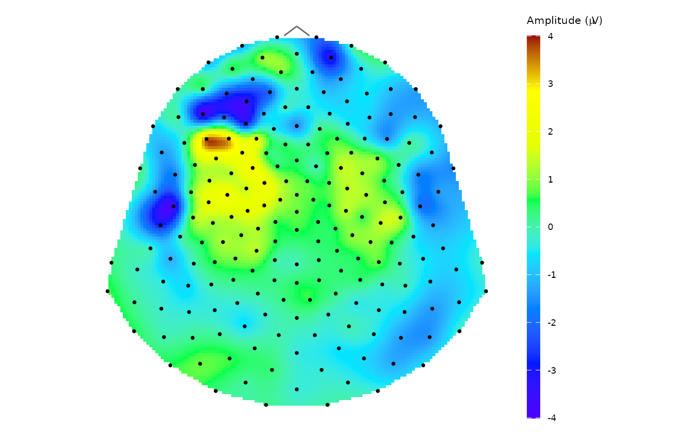

Calculate mean in temporal or spatial domain
compute_mean.RdCalculate a pointwise or a jackknife (leave-one-out) average signal across temporal or spatial domain together with standard error and pointwise confidence interval (CI) bounds.
Pointwise averages can be computed in two ways: standard (un-weighted) by default, or weighted using the values in the column specified by weights_col.
The function computes an average at group, subject, sensor/time point, condition or epoch level (according to the level parameter). For the option level = "epoch" the epochs are averaged etc. Function assumes pre-prepared data according to the chosen level.
Arguments
- data
A data frame, tibble or a database table with input data, required columns:
timeorsensor(according to the selected domain), the column with the EEG amplitude specified in the argumentamplitudeand columns corresponding to the selectedlevel.- amplitude
A character specifying the name of the column from input data with an EEG amplitude values. Default is
"signal_base"for computing average from baseline corrected signal.- domain
A character specifying the domain over which the average is computed. One of
"time"or"space". Option"time"computes a time-resolved average at each time point, whereas"space"computes a space-resolved average at each sensor.- level
A character specifying the level of average calculation. The possible values are
"epoch","condition","sensor","subject"and"group". See Details for more information.- type
A character specifying the method of calculating the average,
"point"for pointwise average and"jack"for jackknife leave-one-out average.- weights_col
A character specifying the name of the column containing observation weights. If
NULL, un-weighted standard pointwise average is computed.- R
The number of replications used in bootstrap interval calculation. Required only for computing pointwise mean. Default value is 1000.
- alpha
A number indicating confidence interval level. The default value is 0.95 for 95% confidence intervals.
Value
A tibble with resulting average and CI bounds according to the chosen level, domain and alpha arguments. The statistics are saved in columns
averagefor computed average amplitude value,nfor number of observations used in average computing,sefor standard error of the mean,ci_lowfor lower bound of the confidence interval andci_upfor upper bound of the confidence interval.
Details
The function supports averaging at different hierarchical levels of the data (using level argument):
"epoch": averaging across epochs. Returns the average curve (time domain) or sensor array (space domain) for each combination of other grouping variables."condition": averages across experimental conditions."sensor": averages across sensors (space domain) or time points (time domain)."subject": averages across subjects."group": averages across groups of subjects (highest aggregation level). The function assumes input adapted to the desired level of averaging (i.e. forepochlevel theepochcolumn must be present indataetc.). For all levels higher than epochs, the averages of the lower level are assumed as the input data.
Weighted vs un-weighted average (type = "point"):
If
weights_colisNULL, each observation is treated equally (with weight = 1), producing a standard un-weighted mean, standard errors (SE), and CI.If
weight_colsis provided, a weighted average is computed using the values in the specified column as weights. SE and CI are computed based on the weighted variance.
Computing standard error of the mean:
For
type = "point", the standard error is computed as sample standard deviation divided by square root of the sample size for standard mean or its weighted alternative (ifweights_colis specified).For
type = "jack", the standard error is jackknife standard error of the mean (for the exact formula see Efron and Tibshirani 1994).
Computing point confidence intervals: For each average value, the upper and lower bounds of the point confidence interval are also available.
Setting
type = "point"andR: the bounds are computed using percentile method from bootstrapping withRreplicates (can be slow for large amounts of data).Setting
type = "point"without specifyingR: the bounds are computed using standard error of the mean and approximation by the Student distribution.Setting
type = "jack": the bounds are computed using jackknife standard error of the mean and approximation by the Student t-distribution. Note: used method assumes equal variance and symmetric distribution, which may be problematic for very small samples.
Note: If there are NA's in amplitude or weights_col columns, corresponding rows are ignored in the average calculation and function prints a warning message.
Examples
# Average (pointwise) raw signal for subject 1 and electrode E1
# without outlier epoch 14
avg_data <- epochdata |>
pick_data(subject_rg = 1, epoch_rg = 1:13, sensor_rg = "E1") |>
compute_mean(amplitude = "signal", level = "epoch", domain = "time")
str(avg_data)
#> 'data.frame': 50 obs. of 8 variables:
#> $ subject: Factor w/ 2 levels "1","2": 1 1 1 1 1 1 1 1 1 1 ...
#> $ sensor : chr "E1" "E1" "E1" "E1" ...
#> $ time : int 1 2 3 4 5 6 7 8 9 10 ...
#> $ average: num 8.59 9.99 9.41 11.68 9.75 ...
#> $ n : int 13 13 13 13 13 13 13 13 13 13 ...
#> $ se : num 3.06 2.69 3.24 3.19 3.73 ...
#> $ ci_low : num 1.92 4.13 2.35 4.73 1.61 ...
#> $ ci_up : num 15.3 15.8 16.5 18.6 17.9 ...
# \donttest{
# plot the result using interactive plot with pointwise CI
avg_data |>
pick_data(subject = 1) |>
interactive_waveforms(amplitude = "average", t0 = 10,
level = "sensor", avg = FALSE, CI = TRUE)
# }
# Jackknife average signal for subject 1 in all electrodes in time point 11 with baseline correction
# on interval 1:10 (again without outlier epoch 14)
# a) prepare corrected data
basedata <- pick_data(epochdata, subject_rg = 1) |>
baseline_correction(baseline_range = 1:10, type = "absolute")
# b) filter time point 11 (without epoch 14) and compute the average
avg_data <- pick_data(basedata, time_rg = 11, epoch_rg = 1:13) |>
compute_mean(amplitude = "signal_base", level = "epoch", domain = "space", type = "jack")
str(avg_data)
#> 'data.frame': 204 obs. of 7 variables:
#> $ subject: Factor w/ 2 levels "1","2": 1 1 1 1 1 1 1 1 1 1 ...
#> $ time : int 11 11 11 11 11 11 11 11 11 11 ...
#> $ sensor : chr "E1" "E2" "E3" "E4" ...
#> $ average: num -1.298 -0.975 -0.547 -0.722 -0.468 ...
#> $ se : num 1.522 0.895 1.07 1.616 0.895 ...
#> $ ci_low : num -4.61 -2.92 -2.88 -4.24 -2.42 ...
#> $ ci_up : num 2.017 0.975 1.785 2.799 1.482 ...
# c) plot the result with topo_plot()
topo_plot(data = avg_data, amplitude = "average")

# Space average on subject level (average for all included subjects in time point 11)
# a) compute mean from all epochs for each subject
mean_epoch <- epochdata |>
pick_data(time_rg = 11, epoch_rg = 1:13) |>
compute_mean(amplitude = "signal", level = "epoch", domain = "space", type = "point")
# b) compute mean on subject level
mean_subjects <- compute_mean(mean_epoch, amplitude = "average", level = "subject",
domain = "space", type = "point")
head(mean_subjects)
#> sensor average n se ci_low ci_up
#> 1 E1 4.434246 2 3.7010733 -42.59235 51.460841
#> 2 E2 -2.238430 2 2.5388228 -34.49723 30.020372
#> 3 E3 -2.996385 2 2.2566554 -31.66991 25.677141
#> 4 E4 -8.130263 2 6.7581756 -94.00103 77.740500
#> 5 E5 -3.230486 2 2.6041078 -36.31881 29.857841
#> 6 E6 -2.121224 2 0.7030299 -11.05407 6.811618
# c) compute weighted mean with number of observations as weights
weighted_mean_subjects <- compute_mean(mean_epoch, amplitude = "average", level = "subject",
domain = "space", type = "point", weights_col = "n")
head(weighted_mean_subjects)
#> sensor average n se ci_low ci_up
#> 1 E1 4.434246 2 0.7402147 2.909746 5.958747
#> 2 E2 -2.238430 2 0.5077646 -3.284191 -1.192669
#> 3 E3 -2.996385 2 0.4513311 -3.925919 -2.066852
#> 4 E4 -8.130263 2 1.3516351 -10.914007 -5.346518
#> 5 E5 -3.230486 2 0.5208216 -4.303138 -2.157834
#> 6 E6 -2.121224 2 0.1406060 -2.410808 -1.831641